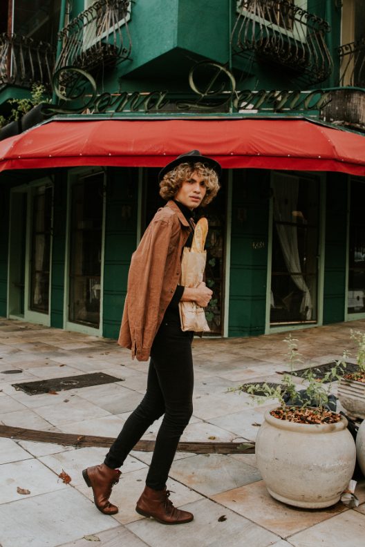
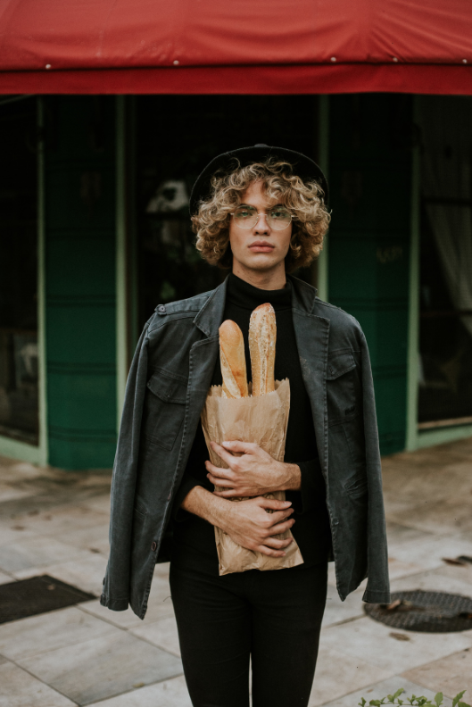
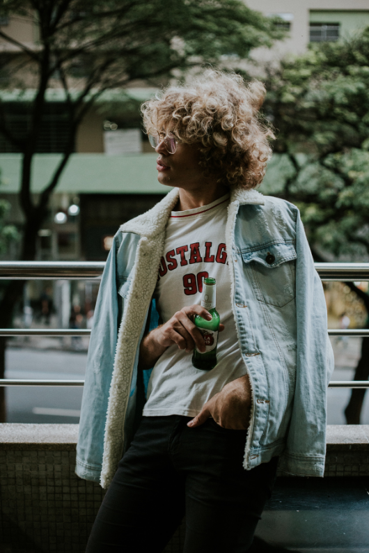
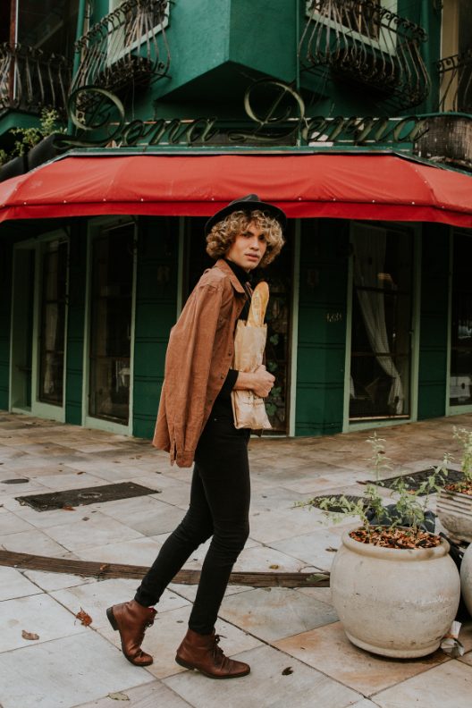
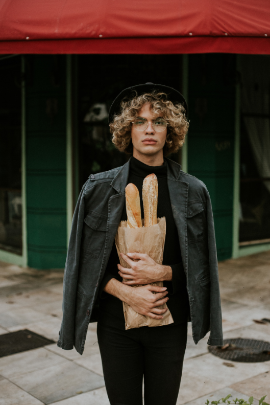
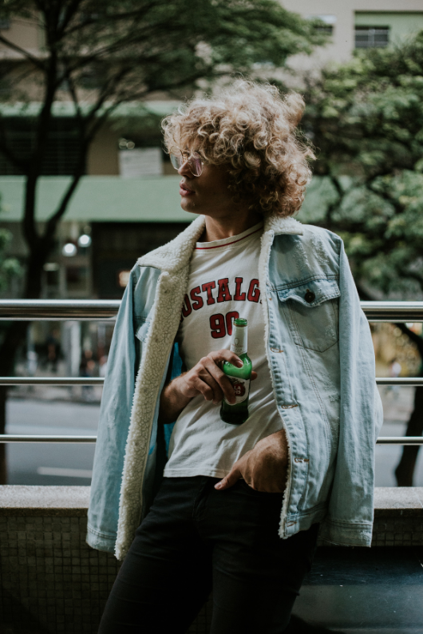

Ensaio Marcos
"O dia começou meio que chovendo, meio nublado e tals, mas isso foi ruim? CLARO QUE NÃO, NÓS ADORAMOS DIAS NUBLADO. As nuvens funcionam como grande difusores, diminuindo as sombras e não deixando a gente assar no tempo haha Mas nesse caso, contribui para cliques com cores mais próximas de um clima mais europeu, que fazia parte das nossas inspirações."
 




